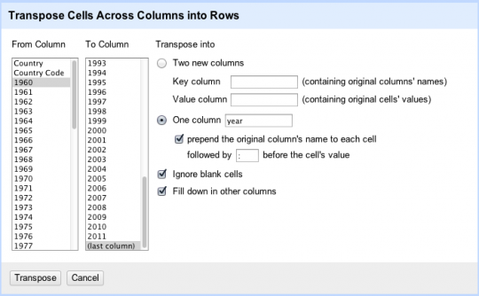

NoSQL
Par Fabien Poulard / @grdscarabe / Dictanova
EPSI -- «Qualité des données»
SQL ?
- Base de données relationnelles
- Relations = liens entre des enregistrements
- Jointure sur différentes tables : clés étrangères
- Formes normales (3 Boyce Codd NF)
- Contraindre la modélisation des données pour éviter les anomalies transactionnelles
ACID
Un système de gestion de base de données classique permet de réaliser des transactions :
- atomiques : suite d'opérations est indivisible (rollback)
- cohérentes : contenu cohérent à la fin de la transaction
- isolées : modifications en cours ni visibles, ni modifiables tant que non validées (commit)
- durables : permanence de l'état de la base après validation
NoSQL = Not Only SQL
Pas une totale remise en cause du SQL, une remise en cause partielle
Dans quel but ?
- Simplification
- Suppression de conditions ACID pour faciliter la montée en charge
- Besoins spécifiques
Quelques exemples
- BigTable (Google)
- Cassandra (Facebook, Twitter, Digg)
- CouchDB, CouchBase
- HBase
- MongoDB
- Neo4j
- Redis
- ...
Mise en pratique
Jeu de données : world life expectancy de la banque mondiale.
Préparation des données : transposition avec OpenRefine
Objectif : Passer d'un fichier CSV contenant plusieurs valeurs par ligne à une seule valeur par ligne avec OpenRefine.
Préparation des données : transposition avec OpenRefine
Redis
- Installer
- Injecter les données
- Jouer
Redis / cli
> keys *
> set test1 10
> get test1
Liste des commandes Redis : redis.io/commands
Redis / Python
import redis
c = redis.StrictRedis()
c.set("test2", 1)
Redis / Python
import csv
with open("SP-DYN-LE00-IN_Indicator_MetaData_en_EXCEL-xls.tsv", "r") as fh:
reader = csv.reader(fh, delimiter="\t")
#reader.next()
next(reader)
for row in reader:
try:
key = "%s:%s" % (row[1], row[2])
print "key -> %s" % key
c.set(key, float(row[3]))
except Exception as e:
print "Error for row '%s': %s" % (row, e)
Redis / Python
sum = 0
keys = c.keys("*:2011")
for x in c.mget(keys):
sum += float(x)
print "Avg life expectancy: %f" % (sum / len(keys))
MongoDB
- Installer
- Injecter les données
- Jouer
Mongo / cli
> show dbs
> use local
> show collections
> db.unecollection.find()
Liste des commandes Mongo : docs.mongodb.org
Mongo / Python
import pymongo
import csv
coll = pymongo.Connection()["dbepsi"]["life"]
with open("SP-DYN-LE00-IN_Indicator_MetaData_en_EXCEL-xls.tsv", "r") as fh:
reader = csv.reader(fh, delimiter="\t")
next(reader)
for row in reader:
try:
docByCountry = {"_id": row[1]}
docByYear = {"_id": int(row[2])}
# upsert a country in a year document
coll.update(docByYear, {"$set": {row[1]: float(row[3])}}, upsert=True, multi=False)
# upsert a year in a country document
coll.update(docByCountry, {"$set": {row[2]: float(row[3])}}, upsert=True, multi=False)
except Exception as e:
print "Error for row '%s': %s" % (row, e)
Map/Reduce

Mise en pratique
Prendre en main Map/Reduce dans MongoDB
- Moyenne de l'espérance de vie mondiale pour chaque année
- Progression moyenne de l'espérance de vie par pays au cours des dernières décennies
- Pays avec la plus forte/faible progression d'espérance de vie
- Progression moyenne de l'espérance de vie mondiale au cours des dernières décennies
Mise en pratique : fonction map
var m = function() {
for(var k in this) {
if (k != "_id") {
emit(k, {"sum_exp": this[k], "n": 1});
}
}
}
Mise en pratique : fonction reduce
var r = function(k, vals) {
var res = {"sum_exp": 0, "n": 0};
for(var i=0 ; i<vals.length ; i++) {
var val = vals[i];
res["n"] += val["n"];
res["sum_exp"] += val["sum_exp"];
}
return res;
}
Mise en pratique : fonction finalize
var f = function(k, res) {
res["avg"] = res["sum_exp"] / (1.*res["n"])
return res;
}
Mise en pratique : exécution
db.life.mapReduce(m, r, {out: "avg_life_per_year", query: {_id: /\w+/},finalize: f})
Ressources
- Using OpenRefine, Excel to clean user-submitted data
- Ordnance Survey Linked Data and the Reconciliation API
- A Wrangling Example With OpenRefine: Making “Oven Ready Data”
- Cleaning Data with Refine
- Questioning Election Data to See if It Has a Story to Tell
- Geocoding Using the Google Maps Geocoder via OpenRefine
- Grabbing Twitter Search Results into Google Refine and Exporting Conversations into Gephi
- Data-Mining My Old Radio Playlists
- Tutorial: Using Google Refine to clean mortgage data
- Réconciliation avec VIVO